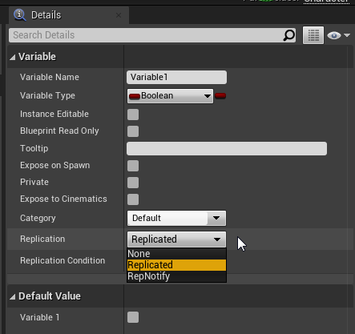
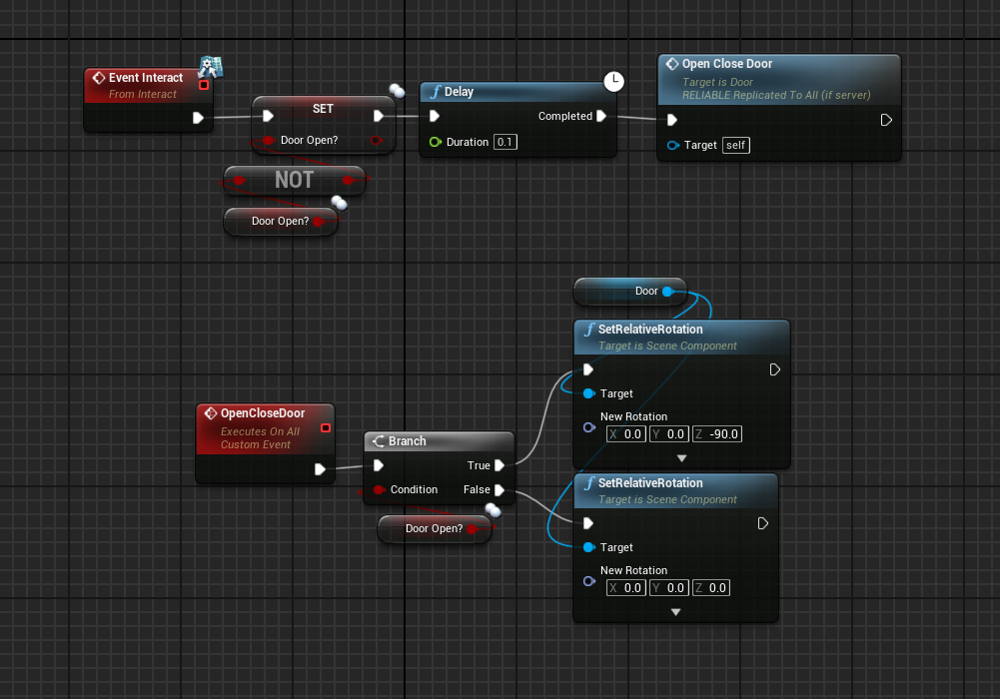
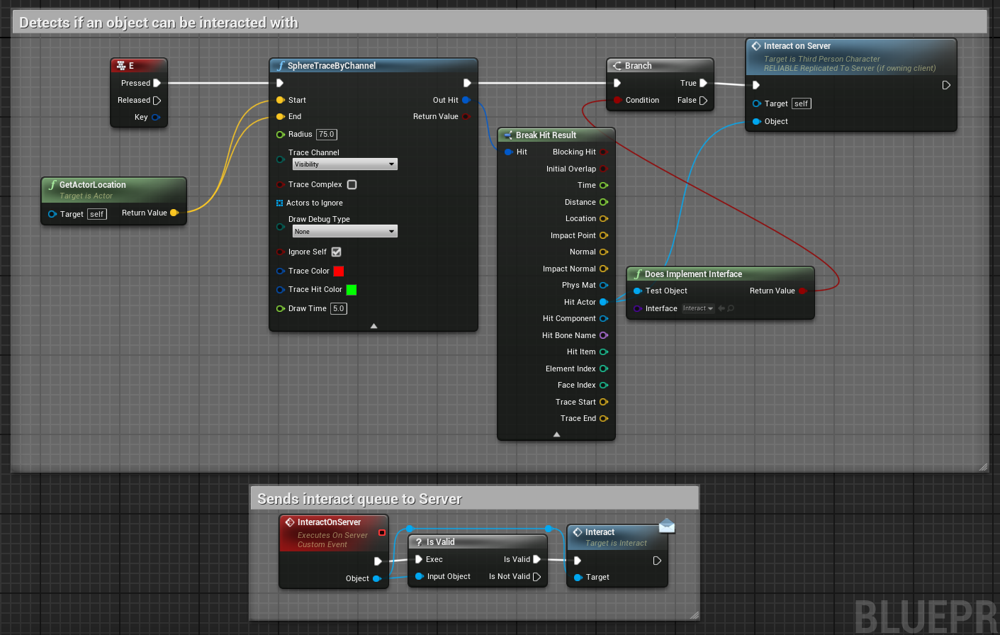

Replicating Variables
Replicating Variables is a relatively straightforward process in Unreal Engine.
Similarly to replicating custom events, we can enable replication on a variable by clicking on it and enabling replication in the details panel for the variable as shown here:

We can see we have 3 options being None, Replicated, and RepNotify. We can ignore RepNotify for now and will just focus on standard replication.
By replicating a variable, the server can automatically update clients any time that variable is updated on any replicated actor. It should be noted that only the server host has the authority to change a replicated variable.
We can use this for something like opening a door for example. Here I have code for opening a door:

What this code is doing, everytime the door is interacted with, the DoorOpen? boolean is swapped, then the server tells the clients to either open or close the door.
The state of the door will be replicated, as it is controlled by a replicated boolean that is set on the server.
If you were curious how the interact code works, and how clients can interact despite the "interact" event only being accessible to the server, it looks like this:

Basically, a client can do a sphere trace when pressing E which if an interactable object is detected, it will send a copy of that object to the server and tell it to interact with it. This is possible because it is done on the character blueprint, meaning the client will have authority to send server commands here.
From there, the server will flip the door open boolean which will replicate to everyone, then it will tell everyone to either open or close the door.
This about wraps it up for replicated variables, continue to the next page to learn about using RepNotify!